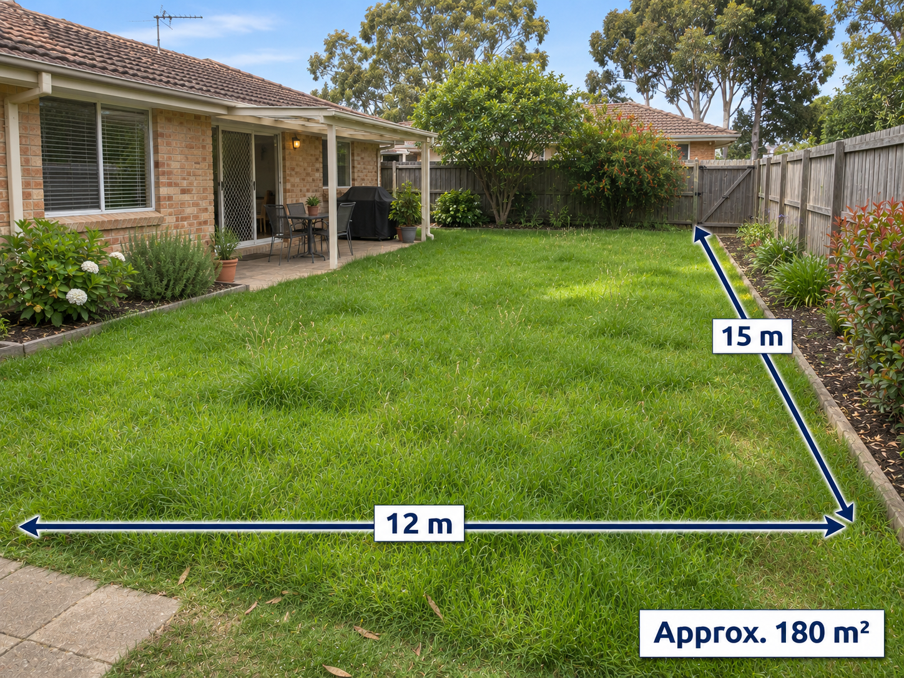

BUSINESSES FOUND i
24
Across 3 selected suburbs
Compare estimates for the same residential job across Sydney.
Indicative prices linked to the original replies.
| BUSINESS | SUBURB | ESTIMATE | REPLY |
|---|
Search progress by suburb

Overgrown grass · flat yard · side gate access · mow, edge and leave clippings in green bin.
A consistent job description makes estimates easier to compare.
{{suburb}}Demo sender: Jamie Taylor · mailbox configured separately
Hi,
I’m looking for someone to mow the lawn at my place in Marrickville every couple of weeks during the growing season.
It’s roughly 180 m², mostly flat, and there’s side gate access. I’ve attached a photo and marked the area. I’d be after a mow, the edges tidied along the paths, and the clippings put in the green bin.
Could you let me know roughly what you’d charge per visit? Please include whether that covers edging and if there are any extra costs.
Thanks,
Jamie
A spreadsheet view of discovered providers and campaign responses.
| BUSINESS | SUBURBS SERVED | DISCOVERY SOURCE | ENQUIRY | ESTIMATE | REPLY EVIDENCE |
|---|
Every enquiry, reply and follow-up stays linked to its provider.
Spring 2026 · demo records
Simulation only. No message leaves this demo.